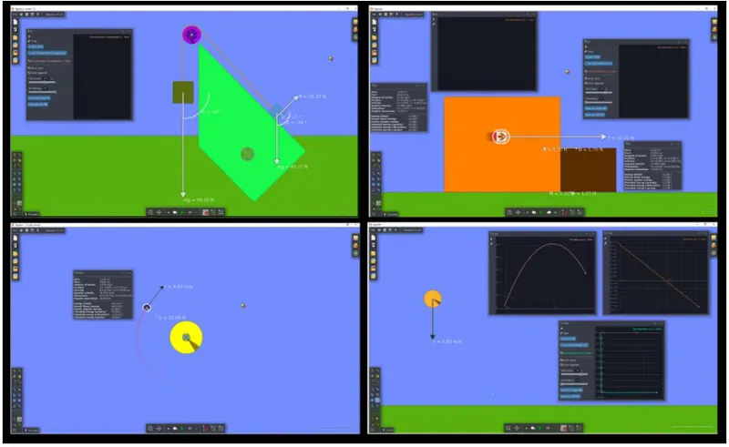

Simulationsgestütztes Lernen
Mein Beitrag
Ich entwickelte Algodoo-Übungen, in denen Lernende Vorhersagen treffen und durch gezielte Änderungen überprüfen.
Einsatz im Beruf
Entscheidungen in Arbeitsabläufen üben und das Verhalten von Anlagen erkunden.
- Mein Beitrag
- Entwicklung von Simulationen und Aufgaben
- Werkzeuge und Methoden
- Algodoo · Diagramme · Messwerte
So habe ich die Simulationen gestaltet
Ich entwickelte Algodoo-Übungen, bei denen Lernende ein Ergebnis vorhersagen, eine Variable ändern und das Ergebnis mit ihrer Vorhersage vergleichen. Diagramme und Messwerte zeigen die Reaktion des Systems. Vor dem nächsten Versuch erklären die Lernenden, was sich verändert hat.
Einsatz in der Weiterbildung
Ein Betriebsteam könnte untersuchen, wie Last oder Reibung das Verhalten einer Anlage beeinflussen. Lernende treffen dieselbe Entscheidung unter verschiedenen Bedingungen und besprechen die Folgen, bevor sie den Ablauf am echten Gerät anwenden.
Wirkung prüfen
Geben Sie den Lernenden ein neues Szenario. Sie wählen eine Einstellung und begründen sie. Prüfen Sie, ob die Entscheidung korrekt und die Begründung nachvollziehbar ist.
Projektbild
